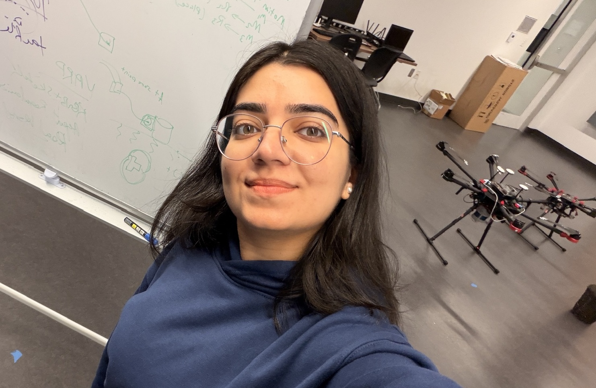

I am a Ph.D. student in Computer Science at the University of Maryland, College Park, advised by Prof. Pratap Tokekar in the RAAS Lab. I hold a Master of Engineering (Robotics) from UMD.
My research sits at the intersection of perception and robot learning, with a focus on building manipulation and navigation systems that generalize in the real world. I'm especially interested in learning from rich supervision — video, language, demonstrations, and preference feedback — and using foundation-scale vision models to make policies and rewards more data-efficient and robust.

News
- Jul 2026 STeP paper posted on arXiv — precise action generation with Vision Language Models.
- May 2026 Moved to Paris for the summer as a Research Intern at Enchanted Tools!
- Jan 2025 Sketch-to-Skill accepted to RSS 2025!
- Jul 2025 First time volunteering at RSS 2025.
- Mar 2025 Awarded NSF I-Corps 2025 grant for customer discovery in tech innovation.
- Jan 2025 Starting my Ph.D. at UMD with Prof. Pratap Tokekar!
- Mar 2024 Won the ICRA 2024 Travel Grant to attend ICRA in Yokohama, Japan.
- Feb 2024 Joining Bell Labs as a Spring co-op research intern!
- Jan 2024 Pre-Trained Masked Image Model for Navigation accepted to ICRA 2024!
- Aug 2023 SeMask accepted to NIVT Workshop at ICCV 2023!
Experience
-
Research Intern · Enchanted ToolsResearched methods to improve policy performance using lightweight reinforcement learning and deployed algorithms on the Mirokai humanoid robot for mobile manipulation.
-
Faculty Research Assistant · UMIACS, UMDDeveloped a framework for bootstrapping RL using 2D sketch trajectories. Achieved 96% of teleop baseline and 170% improvement over pure RL.📄 → Sketch-to-Skill (RSS 2025)
-
Robotics Co-op · Nokia Bell LabsCurated large-scale warehouse data for segmentation models. Adapted 3D multi-object tracking to 2D using Kalman filters.
-
Robotics Intern · Nokia Bell LabsEngineered a zero-shot 6D pose estimation pipeline (YOLO + SfM + PnP). Optimized efficiency by 50%.
Research
I'm interested in robot manipulation, perception, and learning from rich supervision. Representative papers are highlighted.

|
In Submission arXiv, 2026
|

|
In Submission
|

|
In Submission
|

|
RSS 2025
|

|
ICRA, 2024
|

|
ICRA Workshop, 2023
|

|
ICCV Workshop, 2023
|

|
Quantum Journal, 2021
|